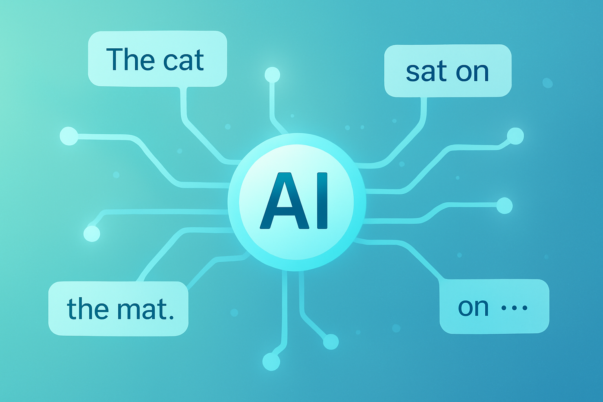
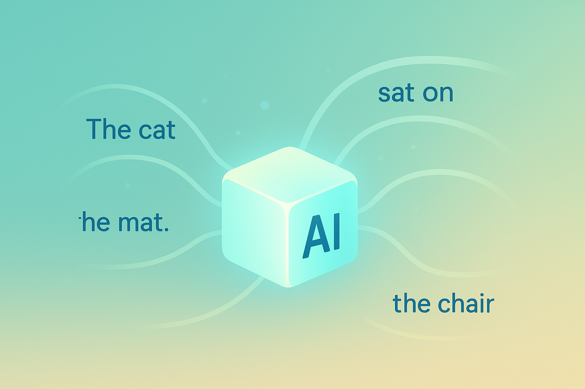
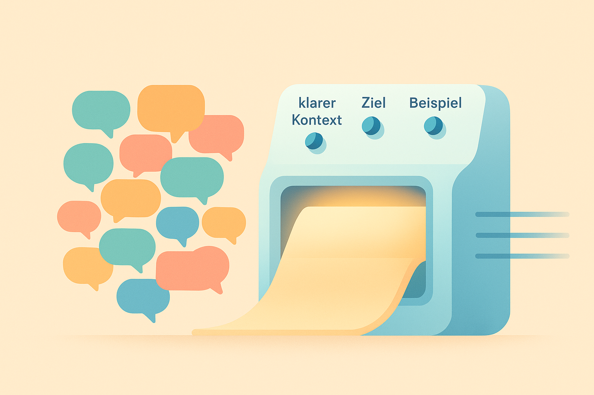

2 Wie KI denkt (aber nicht wirklich denkt)
Warum du das Innenleben von ChatGPT nicht komplett verstehen musst — aber die richtigen mentalen Modelle brauchst.
2.1 Warum dieses Kapitel wichtig ist
Bevor du lernen kannst, mit KI richtig zu sprechen, musst du verstehen, was für ein Wesen sie eigentlich ist. Keine Sorge—das wird kein Informatikunterricht, kein Mathe-Monster, kein neuronales Netzwerk mit Formeln.
Dieses Kapitel ist wie eine Art „Benimm-Regelbuch“ für eine neue, ziemlich ungewöhnliche Spezies:
👉 Eine Maschine, die in Sprache denkt.Du musst nicht wissen, wie jeder einzelne Transistor funktioniert. Aber du brauchst ein gutes Gefühl dafür, wie KI Entscheidungen trifft, warum sie manchmal perfekt wirkt und manchmal völlig danebenliegt — und wie du sie steuern kannst.
Stell dir vor, du würdest ein Haustier bekommen, das:
- extrem klug ist,
- superschnell lernt,
- dir jederzeit hilft,
- aber gelegentlich völligen Quatsch erzählt,
- und sehr empfindlich darauf reagiert, wie du etwas sagst.
Dieses Kapitel zeigt dir:
👉 Wie KI tickt
👉 Warum sie nicht „weiß“, aber „wahrscheinlichkeitsbasiert antwortet“
👉 Wie du Missverständnisse erkennst
👉 Wie du verhindern kannst, dass KI halluziniert
👉 Warum KI Sprache „vorhersagt“, nicht „kennt“Und am Ende weißt du, warum gutes Prompting funktioniert.
2.2 KI denkt nicht wie wir — und genau das ist der Trick
Wenn du ChatGPT etwas fragst, passiert im Hintergrund kein logisches Nachdenken, wie wir es tun. Die KI:
- sieht deine Eingabe,
- vergleicht sie mit Milliarden Beispielen,
- berechnet, welche Antwort statistisch am wahrscheinlichsten sinnvoll ist,
- und gibt diese Antwort aus.
Das klingt vielleicht mechanisch, aber es ist eigentlich genial.
Die KI hat kein Wissen in Form von „Fakten“ gespeichert wie ein Lexikon. Stattdessen hat sie Muster gelernt:
- Wie Menschen sprechen
- Welche Wörter oft zusammen auftreten
- Welche Formulierungen Experten benutzen
- Wie Probleme typischerweise erklärt werden
- Welche Fehler Anfänger machen
- Welche Struktur gute Antworten haben
Man könnte sagen:
👉 Die KI kennt keine Wahrheit — sie kennt Muster.Wenn du das verstehst, wirst du automatisch besser im Prompting. Denn du hörst auf, die KI wie einen „Faktenautomaten“ zu behandeln.
Du begreifst:
👉 Die KI ist ein Musterverstärker.
👉 Du steuerst das Muster über deinen Prompt.
2.3 Warum KI manchmal Fehler macht (obwohl sie klug wirkt)
Einer der größten Mythen ist:
👉 KI lügt absichtlich.Das stimmt nicht. Sie hat einfach keine Realität, die sie abgleichen kann.
Wenn du fragst:
„Wer hat 1812 die Mondlandung durchgeführt?“
gibt es zwei logische Optionen:
- KI erkennt die absurde Frage → erklärt dir den Fehler
- KI versucht trotzdem, ein Muster zu finden → halluziniert
Manchmal weiß sie: Das ergibt keinen Sinn. Manchmal sucht sie nur nach einem Muster wie:
„1812“ + „Mondlandung“ + „Wer?“ → klingt wie Geschichtsfrage → gibt historischen Namen zurück.
Für dich wichtig zu merken:
👉 Je präziser und realistischer du fragst, desto weniger Fehler produziert die KI.
👉 Je vager du fragst, desto kreativer (und fehleranfälliger) wird sie.
Deshalb funktionieren gute Prompts.
2.4 Die drei Denkarten der KI (mental leicht vorstellbar)
Damit du verstehst, wie ChatGPT arbeitet, brauchst du keine Formeln — nur die folgenden drei Bilder.
👉 Der Wahrscheinlichkeits-DenkerDie KI überlegt nicht:
„Was ist wahr?“
Sondern:
„Welches Wort ist wahrscheinlich das richtige nächste Wort?“
Wenn dein Prompt vage ist → viele mögliche Fortsetzungen
Wenn dein Prompt klar ist → sehr wenige mögliche Fortsetzungen
Du steuerst also die Antwort, indem du die „Wahrscheinlichkeitsräume“ verkleinerst.
👉 Der Muster-DetektivWenn du schreibst:
„Erkläre mir etwas wie für einen 12-Jährigen.“
aktivierst du im Modell ein Muster:
- kurze Sätze
- einfache Beispiele
- Alltagssprache
Wenn du schreibst:
„Antwort bitte wie ein Professor in Linguistik.“
aktiviert das ein komplett anderes Muster.
KI reagiert ultra-sensibel auf Hinweise und Rollen. Darum ist „Role Prompting“ so mächtig (kommt später im Buch).
👉 Der Gedächtnis-BlenderDie KI erinnert sich nicht wie ein Mensch. Sie kann nicht sagen:
👉 „Ich weiß noch, dass du gestern …“
Jede Antwort entsteht nur aus dem, was im Prompt steht, plus den gelernten Mustern.
Deshalb passiert’s manchmal, dass KI vergisst, was du vor 20 Nachrichten gesagt hast. Konversationen sind begrenzt.
👉 Je wichtiger etwas ist, desto deutlicher muss es im Prompt stehen.
2.5 Warum KI „besser schreibt, als denkt“
Menschen denken zuerst und sprechen dann.
KI spricht zuerst und denkt währenddessen.
Sie ist darin unglaublich gut:
- Texte generieren
- Ideen kombinieren
- Beispiele formen
- Strukturen nachbauen
- Formulierungen verbessern
Aber sie ist schlecht in:
- echten logischen Beweisen
- Zahlen (ernsthaft… frag nie nach Rechnen ohne genaue Vorgaben)
- reale Weltwissen-Checks
- komplexe Abhängigkeiten
Was bedeutet das für dich?
👉 Wenn du die KI klar führst, wird sie logisch.
👉 Wenn du sie frei lässt, wird sie kreativ.
Beides ist gut — solange du weißt, was du willst.
2.6 Ein Modell, das Sprache „vorherfühlt“
Viele Einsteiger glauben, KI sei wie Wikipedia: „Da ist alles drin.“
Aber LLMs funktionieren eher wie eine Art:
👉 Super-Autovervollständigung mit extrem viel Training.Wenn du in WhatsApp schreibst:
„Wir sehen uns …“
und dein Handy schlägt:
„morgen“
„heute Abend“
„bald“
vor, dann macht dein Handy das Gleiche wie KI — nur viel primitiver.
ChatGPT macht das ebenfalls, nur in einem gigantisch komplexen Kosmos von Mustern.
Das klingt vielleicht simpel, aber hier ist die Magie:
- Wenn du Muster richtig anstößt → KI wirkt brillant
- Wenn du Muster falsch anstößt → KI wird verwirrend
Das ist wie ein Instrument:
👉 Die KI ist das Klavier — dein Prompt ist die Melodie.2.7 Warum KI so gut imitieren kann
Egal ob du willst, dass sie schreibt wie:
- Einstein
- Taylor Swift
- Sherlock Holmes
- dein Lieblings-YouTuber
- du selbst
- ein 12-jähriger oder ein Uni-Professor
Die KI erkennt aus wenigen Wörtern, welches Muster sie anlegen soll.
Daher funktionieren Prompts wie:
„Erkläre es mir wie einem neugierigen 14-jährigen Schüler, der gerade TikTok geöffnet hat.“
so extrem gut.
Du gibst der KI ein klares Muster.
Je besser du diese Muster definierst, desto:
- sauberer
- klarer
- stärker
- realistischer
wird die Antwort.
2.8 Warum gute Prompts KI „fokussieren“
Damit ein Prompt funktioniert, muss er:
- der KI ein Muster geben,
- den Raum möglicher Antworten einengen,
- die Rolle klären,
- das Ziel eindeutig machen,
- die Struktur vorgeben.
Beispiel:
Schlechter Prompt:
„Erklär mir Quantenphysik.“
→ viel Raum, keine Richtung → Antwort meistens zu technisch, zu lang, zu abstrakt.
Guter Prompt:
„Erkläre Quantenphysik für eine 9. Klasse so, wie ein YouTuber es in einem 60-Sekunden-Video machen würde — mit einer einzigen einfachen Metapher.“
→ klares Muster
→ klare Zielgruppe
→ klare Struktur
→ begrenzter Raum
→ Ergebnis: viel besser
Du wirst im Laufe des Buchs lernen, genau diese Art von Klarheit herzustellen.

2.9 Warum du keine Technik verstehen musst — nur Verhalten
Viele glauben, man müsse:
- neuronale Netze
- Transformer-Architektur
- Attention-Mechanismen
- Tokenisierung
- Sampling-Methoden
kennen.
Aber für den praktischen Gebrauch — also die Welt der Prompts — brauchst du das alles nicht.
Du musst nur verstehen, wie die KI sich verhält. So wie du auch ein Auto fahren kannst, ohne einen Verbrennungsmotor zu zerlegen.
Was du brauchst, ist ein realistisches mentales Modell:
👉 Die KI ist ein sprachbasiertes Musterorakel, das aus Beispielen lernt und Wahrscheinlichkeiten berechnet.Mehr nicht.
Das reicht, um ein Prompt-Profi zu werden.

2.10 Warum dieses Wissen dich stärker macht
Wenn du verstehst, wie KI denkt, dann:
- schreibst du bessere Prompts,
- produzierst bessere Ergebnisse,
- erkennst Fehler schneller,
- kannst kreative Grenzen austesten,
- vermeidest Frustration,
- nutzt KI so, wie sie tatsächlich funktioniert.
Dieses Kapitel ist der mentale Unterbau für alles, was folgt.
Du wirst danach:
👉 in Teil 2 dieses Kapitels lernen, **wie du KI richtig anleitest**,
👉 ab Kapitel 3 lernen, **wie Prompts aufgebaut sind**,
👉 später erfahren, **wie Fortgeschrittenen-Techniken funktionieren**,
👉 und am Ende ein echter Prompt-Engineer für den Alltag sein. 2.11 Warum KI nicht „weiß“, sondern „wahrscheinlich entscheidet“
In der Schule lernst du vielleicht: Eine Antwort ist richtig oder falsch.
Für KI gilt ein anderer Ansatz:
Sie entscheidet statistisch, wahrscheinlich, vorausschauend, aber nicht wie ein Mensch.
Wenn du mit ChatGPT sprichst, versucht es nicht, eine Frage wie ein Lehrer zu beantworten – sondern wie ein Textmodell:
👉 „Welches Wort ist das wahrscheinlichste nächste Wort?"Das bedeutet:
- KI macht manchmal Fehler, die wie Menschensachen aussehen.
- Oder Erklärungen, die logisch klingen, aber nicht stimmen (Halluzinationen).
- Oder Vereinfachungen, die nicht zum Kontext passen.
Das ist normal. Es hat nichts damit zu tun, dass du “falsch gefragt” hast – sondern damit, wie neuronale Netze funktionieren.
2.11.1 Warum ist das wichtig für dich?
Weil du als Prompt-Engineer — und ja, du wirst einer — diese Grundregel brauchst:
👉 Je klarer du beschreibst, was wahrscheinlich sein soll, desto zuverlässiger wird die KI.Wenn du z. B. sagst:
„Erkläre mir Quantenphysik.“
… dann kann alles passieren.
Aber wenn du sagst:
„Erkläre mir Quantenphysik wie eine animierte TikTok-Erklärfigur, maximal 30 Sekunden, nur mit einfachen Bildern und Vergleichen.“
… dann gibst du:
- Zielgruppe
- Stil
- Länge
- Ton
- Format
Und schon verbessert sich das Ergebnis massiv — weil du die Wahrscheinlichkeit modellierst, nicht die „Intelligenz der KI“.
2.12 Warum Kontext die halbe Miete ist
Das Backend einer KI funktioniert so: Es betrachtet den gesamten Chatverlauf als einen einzigen Text.
Jedes Mal, wenn du etwas schreibst, passiert Folgendes:
- Dein Prompt wird in Tokens zerlegt.
- Die KI berechnet Embeddings (Vektoren).
- Sie versucht, die wahrscheinlichste Fortsetzung zu erzeugen – basierend auf allem bisherigen Input.
Das heißt:
👉 KI vergisst nicht – aber sie priorisiert.Wenn du 20 Nachrichten chattest und dann plötzlich sagst:
„Schreib das bitte im Stil wie oben.“
… und „oben“ war 10 Nachrichten her, kann es sein, dass die KI den Stil verwäscht.
Warum?
Weil lange Kontexte viele Informationen enthalten und die KI versucht, alle gleichzeitig zu berücksichtigen.
Das bedeutet für dich:
👉 Dein Prompt ist stärker, wenn du alles Wichtige direkt hineinpackst.
Ein gutes Beispiel:
🔴 Schlecht:
„Schreib den Text bitte besser.“
🟢 Gut:
„Schreib den Text in einem motivierenden Ton, mit kurzen Sätzen, in der Perspektive einer Mentorfigur, wie in einem inspirierten TED-Talk.“
Je mehr Struktur, desto klarere Ergebnisse.
2.13 Warum Beispiele die KI magisch besser machen
Ein Geheimtrick, den viele Anfänger nicht kennen:
Wenn du Beispiele gibst, versteht die KI deinen Stil um ein Vielfaches besser.
Das nennt man In-Context-Learning.
👉 Beispiel ohne Vorbild:Prompt:
„Schreib eine Beschreibung über mein neues Jugendzentrum.“
Antwort:
→ Kann beliebig sein.
👉 Beispiel *mit* Vorbild:Prompt:
„Hier ist ein Beispieltext von mir:
›Unser Streetballplatz ist nicht nur Spielfeld, sondern Treffpunkt. Hier wachsen Freundschaften und Ideen.‹
Bitte schreib in exakt diesem Stil eine Beschreibung für unser neues Jugendzentrum.”
Antwort:
→ Wird deinen Stil nachahmen, auch wenn du nie erklärt hast, warum oder wie.
Das ist keine Magie.
Es ist Statistik:
👉 Die KI lernt aus Mustern sofort — viel schneller als Menschen.2.14 Was passiert, wenn ein Prompt „zu schwach“ ist
Das ist einer der Gründe, warum viele junge Nutzer glauben:
👉 „KI kann das nicht.“
Dabei ist in 90 % der Fälle der Prompt das Problem.
Beispiele, was die KI stört:
- zu wenig Informationen
- kein Format
- unklare Zielgruppe
- Widersprüche
- fehlende Beispiele
- fehlender Kontext
- zu viel Kontext ohne Struktur
- zu viele Ziele gleichzeitig
💡 Ein Prompt ist wie eine Bestellung im Restaurant. Wenn du sagst:
„Ich will was Leckeres.“
… bekommst du wahrscheinlich irgendwas.
Wenn du sagst:
„Ich will eine vegane, leicht scharfe Bowl mit Erdnusssauce und knusprigem Tofu.“
… bekommst du genau das.
2.15 Wie du die KI „stärker führst“, ohne Expertenwissen zu haben
Du musst kein Informatiker sein. Du musst nur wissen, wie man gute Spielregeln setzt.
Hier sind vier goldene Regeln:
👉 Regel 1: Sag der KI, wer sie sein sollBeispiel:
„Du bist mein Lerncoach und erklärst alles so, dass es ein 15-Jähriger versteht.“
Sofort präziser.
👉 Regel 2: Sag der KI, wofür du die Antwort brauchstBeispiel:
„Ich brauche das als Instagram-Carousel für junge Gründer.“
Antwort wird kürzer, visueller, strukturierter.
👉 Regel 3: Sag der KI, was sie lieber vermeiden sollBeispiel:
„Bitte ohne Fachbegriffe, keine komplizierten Definitionen.“
Damit reduzierst du Halluzinationen und Komplexität.
👉 Regel 4: Gib der KI ein FormatBeispiel:
„Erstelle 3 Abschnitte à 100 Wörtern mit klaren Zwischenüberschriften.“
Damit kontrollierst du die Struktur ohne technisches Know-how.

2.16 Warum KI manchmal falsche Dinge selbstbewusst sagt
Ein großes Missverständnis ist:
👉 „Wenn KI selbstbewusst klingt, muss es stimmen.“Nein.
Sprachmodelle erzeugen Selbstbewusstsein rein stilistisch — nicht aus Wissen.
Warum passiert das?
Weil viele Trainingsdaten so klingen. Wikipedia, Blogs, Nachrichten: Alles wirkt formell und sicher.
Das führt zu:
- Fake-Fakten
- erfundenen Quellen
- falschen Zitaten
- übertriebenen Vereinfachungen
👉 Wie du das verhinderst:
Ganz einfach:
„Beantworte vorsichtig und nenne Unsicherheiten, falls Daten fehlen.“
Oder:
„Wenn du etwas nicht weißt, sag es.“
Das verändert den Output dramatisch.
Die KI „weiß“ nicht auf einmal mehr — aber sie ändert ihren Stil und vermeidet falsche Details.
2.17 Der wichtigste Gedanke dieses Kapitels
Wenn du nur eine Sache aus Kapitel 2 mitnimmst, dann diese:
👉 KI ist eine Muster-Maschine, keine Denk-Maschine. Du bestimmst das Muster.Damit wird Prompt Engineering zu einem Werkzeug:
- nicht technisch
- nicht kompliziert
- nicht wie Programmieren
Sondern eher wie:
- kreative Regie
- gute Kommunikation
- Struktur geben
- den Frame setzen
Und das ist, was dich — besonders als junge Person — so mächtig macht:
👉 Du musst kein Experte sein, um gute Ergebnisse zu bekommen.
👉 Du musst nur wissen, wie die Maschine tickt.
2.18 Ausblick auf Kapitel 3
Bevor wir tiefer einsteigen, kommt jetzt der Teil, der für viele Leserinnen und Leser der magische Moment ist: Das Kapitel, in dem sich die Theorie plötzlich lebendig anfühlt.
In Kapitel 2 hast du gelernt, wie KI denkt – nämlich nicht wie ein Mensch, sondern wie ein Muster-Entdecker, der die wahrscheinlichsten Wortpfade berechnet. Das klingt vielleicht abstrakt, aber genau dieses Wissen ist der Schlüssel, um deine ersten wirklich guten Prompts zu formulieren.
In Kapitel 3 gehen wir einen Schritt weiter:
Hier wirst du sehen, wie du mit ganz einfachen Prompt-Formeln sofort bessere Ergebnisse bekommst – ohne Vorkenntnisse, ohne Frust, ohne stundenlanges Experimentieren.
Du wirst entdecken:
✅ Wie du in nur 10 Minuten echte „Wow, das funktioniert ja!“–Momente erzeugst
Wir starten mit ultrakurzen Prompts, die erstaunlich gute Resultate liefern – sogar, wenn du eigentlich noch gar nicht weißt, was du tust.
✅ Was „schlechte“ Prompts sind – und wie du sie sofort verbessern kannst
Du lernst typische Anfängerfehler kennen:
• zu vage,
• zu kurz,
• ohne Ziel,
• ohne Format,
• ohne Beispiel.
Und du wirst sehen, wie du sie mit einer einfachen Technik in klare, hilfreiche Prompts verwandelst.
✅ 3-Alltags-Formeln für sofort bessere Antworten
Zum Beispiel:
- Ziel + Stil + Format
- Rolle + Aufgabe + Einschränkung
- Input + Erwartung + Beispiel
Diese Formeln kannst du direkt in Schule, Studium, Social Media, Coding, Hobbys oder sogar in deinem Alltag einsetzen.
✅ Mini-Übung: Du verbesserst drei schlechte Prompts – live im Kapitel
Hier wird’s praktisch:
Du bekommst drei chaotische, typische Anfänger-Prompts und machst daraus echte Profi-Anfragen. Und ja – du wirst den Unterschied sofort spüren.
Kapitel 3 ist das Kapitel, das den Knoten löst:
👉 Hier beginnst du nicht nur KI zu verstehen – du beginnst sie zu beherrschen.Wenn du bereit bist, deine ersten echten Erfolge zu feiern, dich überraschen zu lassen und zu merken, wie viel du schon kannst, dann ist Kapitel 3 dein Start in die praktische Prompter-Welt.
Weiter geht’s!